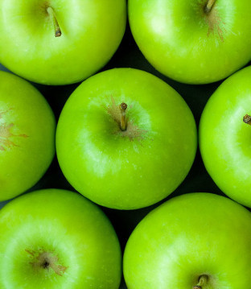

Be Seasonal
Choosing seasonal fruit and veg is good for the environment and good for you.
The Produce Checker is designed to make it easy to pick the best food for you and the best food for the planet. Try it out!

Choosing seasonal fruit and veg is good for the environment and good for you.
The Produce Checker is designed to make it easy to pick the best food for you and the best food for the planet. Try it out!